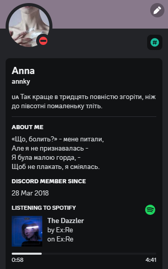

Вирішила почати зі скріншоту профілю, бо там є те, що мене надихає - поезія і музика.
Про мене:
Я Аня і мені двадцять років. Живу у Києві. Навчаюсь на інженерії програмного забезпечення, хоча маю ступіть молодшого бакалавра у галузі права і мала би бути юристом.
Рік тому вже пройшла повністю безкоштовний курс по верстці у Жеки, плюс курс JS.
Рандомні направлення, які мені подобається вивчати:
- Психологія;
- Історія;
- Література.
Навіщо я тут!
Надихає мене не тільки поезія і музика, як я встигла вже відмітити вище!
Завжди найбільше надихає розвиток. Якщо в такий час з'являється можливість і сили для розвитку - ними обов'язково треба користуватись.
Я давно не займалась версткою, хоча це те заняття, яке я знайшла для себе абсолютно випадково, і від чого я сама була здивована - воно мені дуже сподобалось. Сама суть програмування завжди лякала мене, хоча й одночасно з тим цікавила, але страх ніяк не дозволяв поглиблюватись у вивчення цього, поки я не дізналась, що таке "FrontEnd". Робити і відразу бачити результат - це вау.